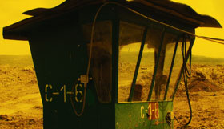

Orbitalna
Orbital

Marcin Malaszczak – Germany / Poland 2013 – 25 min.
Sc+DOP+E+P: Marcin Malaszczak – V: Arsenal Institut
HD – polnisch
As with Malaszczak’s earlier feature film "Sienawka", there are references reminiscent of science-fiction movies. The world is both recognizable and unrecognizable to us. This could easily be read as dystopian vision of the future, yet it takes place in our present. Orbitalna challenges the viewer in a cinematic way to confront elements of contemporary existence. Through the film's use of cinematography, the spectator is offered the chance to transcend this existence, through use of the imagination and through attentive and engaged viewing. – Steven Williams
Tuesday 14/10 6:30 p.m. Werkstattkino
Marcin Malaszczak, born in 1985 in Poland. Immigration to West Berlin with his parents as a child. He studied Film Directing at the German Film and Television Academy (dffb).
Films: Der Schwimmer 2010 – Sieniawka 2013 – Orbitalna 2014